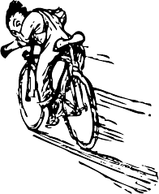

You are here►Home►Dive Into HTML5
№6
YOU ARE HERE
(AND SO IS EVERYBODY ELSE)
show table of contents
DIVING IN
Geolocation is the art of figuring out where you are in the world and (optionally) sharing that information withG
people you trust. There is more than one way to figure out where you are — your IP address, your wireless
network connection, which cell tower your phone is talking to, or dedicated GPS hardware that calculates
latitude and longitude from information sent by satellites in the sky.
THE GEOLOCATION API
The geolocation API lets you share your location with
trusted web sites. The latitude and longitude are available to JavaScript
on the page, which in turn can send it back to the remote web server and do fancy location-aware things like
finding local
businesses or showing your location on a map.
As you can see from the following table, the geolocation API is supported by most browsers on the desktop and
mobile
devices. Additionally, some older browsers and devices can be supported by wrapper libraries, as we’ll see later
in this
chapter.
GEOLOCATION API SUPPORT
| IE |
Firefox |
Safari |
Chrome |
Opera |
iPhone |
Android |
Along with support for the standard geolocation API, there are a plethora of device-specific APIs on other mobile
platforms. I’ll cover all that later in this chapter.
SHOW ME THE CODE
The geolocation API centers around a new property on the global navigator object: navigator.geolocation.
The simplest use of the geolocation API looks like this:
function get_location() {
navigator.geolocation.getCurrentPosition
(show_map);
}
That has no detection, no error handling, and no options. Your web application should probably include at least
the first two of those. To detect support for the
geolocation API, you can use Modernizr:
function get_location() {
if (
Modernizr.geolocation
) {
navigator.geolocation.getCurrentPosition(show_map);
} else {
// no native support; maybe try a fallback?
}
}
What you do without geolocation support is up to you. I’ll explain the JavaScript fallback option in a minute,
but first I want to talk about what happens during that call to getCurrentPosition(). As I mentioned at the beginning of this
chapter,geolocation support is opt-in. That means your browser will never force you to reveal your
current physical location to a remote server. The user experience differs from browser to browser. In Mozilla
Firefox, calling the getCurrentPosition() function of the geolocation API will cause the browser to pop up an
“infobar” at the top of the browser window. The infobar looks like this:
There’s a lot going on here. You, as the end user,
- are told that a website wants to know your location
- are told which website wants to know your location
- can click through to Mozilla’s “Location-Aware
Browsing” help page which explains what the heck is going on (short story: Google provides the location
and stores your data in accordance with its Location
Service Privacy Policy)
- can choose to share your location
- can choose not to share your location
- can tell your browser to remember your choice (either way, share or don’t share) so you never see this
infobar again on this website
Furthermore, this infobar is
- non-modal, so it won’t prevent you from switching to another browser window or tab
- tab-specific, so it will disappear if you switch to another browser window or tab and reappear when you
switch back to the original tab
- unconditional, so there is no way for a website to bypass it
- blocking, so there is no chance that the website can determine your location while it’s waiting for your
answer
You just saw the JavaScript code that causes this infobar to appear. It’s a single function call which takes a
callback function (which I called show_map). The call to getCurrentPosition() will return immediately, but that
doesn’t mean that you have access to the user’s location. The first time you are guaranteed to have location
information is in the callback function. The callback function looks like this:
function show_map(position) {
var latitude = position.coords.latitude;
var longitude = position.coords.longitude;
// let's show a map or do something interesting!
}
The callback function will be called with a single parameter, an object with two properties: coords and
timestamp. The timestamp is just that, the date and time when the location was calculated. (Since this is all
happening asynchronously, you can’t really know when that will happen in advance. It might take some time for
the user to read the infobar and agree to share their location. Devices with dedicated GPS hardware may take
some more time to connect to a GPS satellite. And so on.) The coords object has properties like latitude and
longitude which are exactly what they sound like: the user’s physical location in the world.
POSITION OBJECT
| Property |
Type |
Notes |
coords.latitude
|
double |
decimal degrees |
|
coords.longitude
|
double |
decimal degrees |
coords.altitude
|
"double or"
null
|
"meters above the"
reference ellipsoid
|
coords.accuracy
|
double |
meters
|
coords.altitudeAccuracy
|
"double or "
null
|
meters
|
coords.heading
|
"double or "
null
|
"degrees clockwise from "
true north
|
coords.speed
|
"double or "
null
|
meters/second
|
timestamp
|
DOMTimeStamp |
"like a "
Date()
" object
"
|
Only three of the properties are guaranteed to be there (coords.latitude,
coords.longitude, and coords.accuracy). The rest might come back null, depending on the capabilities of your
device and the backend positioning server that it talks to. The heading and speed properties are calculated
based on the user’s previous position, if possible.
This has been “You Are Here (And So Is Everybody Else).” The full table of contentshas more if you’d like to
keep reading.
DID YOU KNOW?
In association with Google Press, O’Reilly is distributing this book in a variety of

formats, including paper, ePub, Mobi, and DRM-free PDF. The paid edition is called
“HTML5: Up & Running,” and it is available now. This chapter is included in the paid
edition.
If you liked this chapter and want to show your appreciation, you can buy
“HTML5: UP
& Running” with this affiliate link or buy an electronic edition directly from
O’Reilly.
You’ll get a book, and I’ll get a buck. I do not currently accept direct donations.